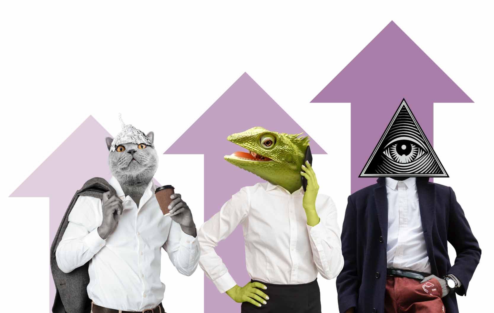

DENSIDER
A loyalty program & app for America’s top-rated airport.
A loyalty program & app for America’s top-rated airport.
Last year, 64.5 million passengers traveled through Denver International Airport (DEN). That number is expected to continue growing, and when you account for the airport’s 35k employees, the daily population of the airport is somewhere around 200,000. This translates to big opportunities for terminal concessions.
DEN was recently named Best Airport in the U.S. by the Wall Street Journal, based on passenger ratings for value, convenience, and reliability. There’s an opportunity to build on this customer experience while continuing to grow DEN’s concessions business.
With this in mind, DEN wanted to explore a digital loyalty program that would boost traveler spending at DEN concessionaires. Taking into account existing constraints and business goals, the client requested that:
Densider is a loyalty program designed to incentivize concession spending, reward exploration of the terminals, and capture the fun, wacky spirit of DEN.
Change the airport mindset by incentivizing exploration.
Reward spending at concessions and automatically rack up points when you connect your credit card.
Status tiers invoke DEN's famously fun conspiracies and let travelers earn extra points to elevate their travel experience.
Geolocation-triggered notifications drive adoption and exploration based on seasonal offers.
A colorful, quirky campaign catches travelers' attention and embraces the seasonal rhythms of Colorado's outdoor lifestyle.
Here's how the project evolved ↴
Knowing we only had four days to design a solution, my team adapted the design sprint methodology to tackle this challenge. Because the deliverables included a pitch to the client, we developed the story and pitch deck alongside the concept beginning on day one.
Secondary Research

User Interviews
Paper Prototyping

Figma
Our first task was to understand. We sifted through research provided by the client, conducted competitive research, and drafted two proto-personas:
Next, we interviewed travelers who fit these personas. We asked them questions about their airport habits (“What’s your pre-flight routine at the airport?”) and their values (“What makes a rewards program worth it to you?”). After synthesizing the perspectives gathered in these conversations, along with the rest of our research, we prioritized three key insights:
Travelers hyper-focus on their destination and often fail to notice their environment as they move through the airport.
Travelers see DEN as a gateway to Colorado’s one-of-a-kind outdoor lifestyle and embrace the airport’s so-called conspiracy theories.
Travelers evaluate loyalty programs based on the choice and value afforded by the rewards.
Based on our new understanding of the problem, we formulated a “How Might We” statement and began storyboarding user journeys in order to quickly uncover opportunities and challenges in capturing loyalty.
Sketching and whiteboarding sessions were useful as my team brainstormed how our insights might translate into a rewards structure and accompanying app:
To make sure that the concept matched up with user needs and motivations, we performed some simple hallway tests and 2-minute user interviews using a couple of sketched app screens. We wanted to hear travelers’ impressions about earning points and redeeming them for rewards.
We also checked in with the account manager to make sure we were heading in a direction that was feasible and attractive to the client. We especially wanted to know (a) whether the rewards structure aligned with expectations, and (b) how comfortable DEN was leaning into the wacky side of its identity (think: Lizard People sightings and Illuminati rumors).
Based on feedback from user testing and client conversations, my team continued iterating on the concept and increasing the fidelity.
By eliminating the need to “check-in” and providing automatic point accrual via credit card link instead, one of the biggest barriers to participation can be removed.
The lore around Denver’s airport lends itself toward making DEN feel like a destination in its own right, and the airport was more than happy to lean into that identity. By bringing those conspiracy elements into the loyalty program’s status tiers, we can make loyalists feel like “insiders.”
We also incorporated some of the airports’ tall tales into the activation campaign, which includes floor decals for heavily trafficked areas as well as digital ads near security and escalators.
DEN plans to move ahead with a phased pilot program building on the work my team did during this 4-day sprint.
“I really appreciate the attention to detail and sensitivity to DEN’s constraints that the students showed in their solutions.” —SVP Marketing @ DEN
Beyond rewarding customers for their loyalty, DENSIDER is poised to impact DEN’s concessions business in four key ways:
Studies show that just a 5% increase in retention can lead to a 25–100% increase in profit.

Moving ahead with an app allows DEN to see how travelers move within DEN, identify spending patterns in key customer segments, and gauge lifetime customer value.

Translating steps to points shifts travelers into an exploratory mindset that helps them shed their travel blinders and discover more of DEN’s offerings.
It’s smart business to extend what already works. In DEN’s case, that’s the fun around its so-called conspiracy theories, which have landed DEN in the media, time and again, and its seasonal content strategy for offers and rewards.